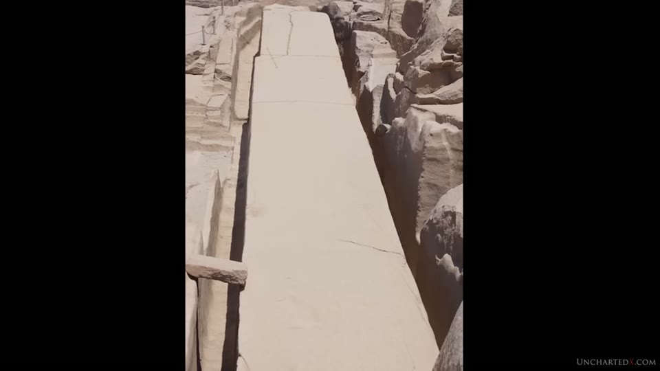
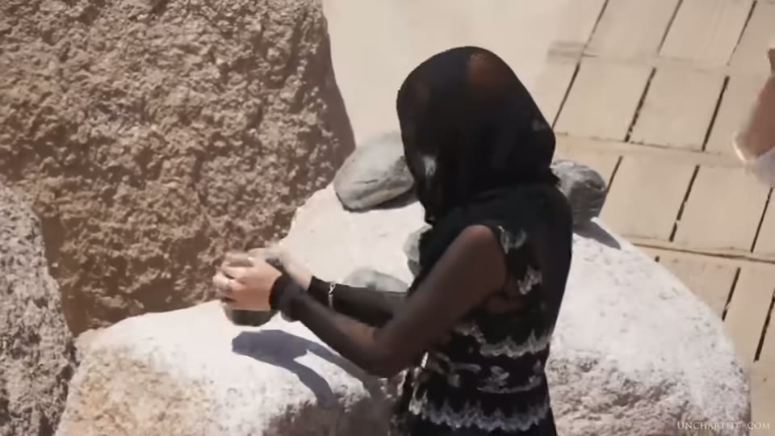
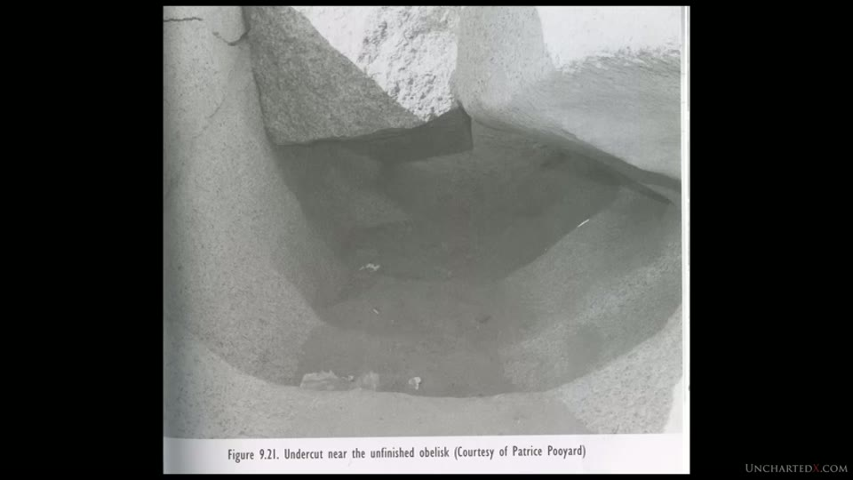
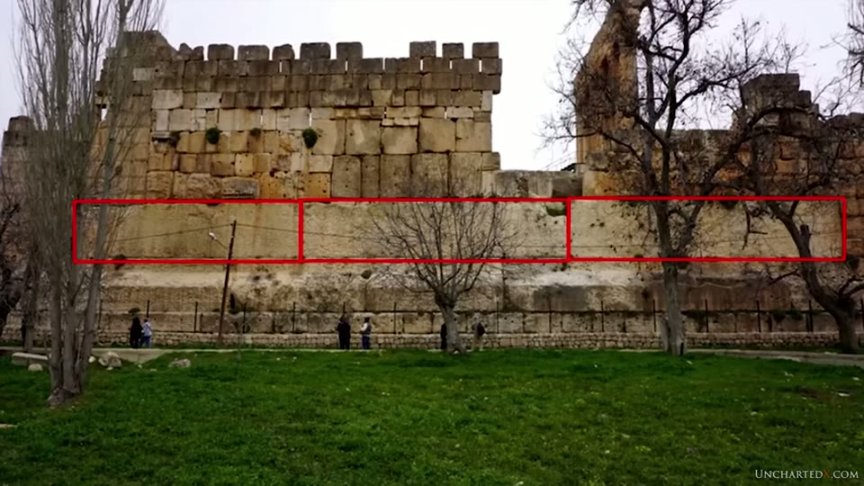
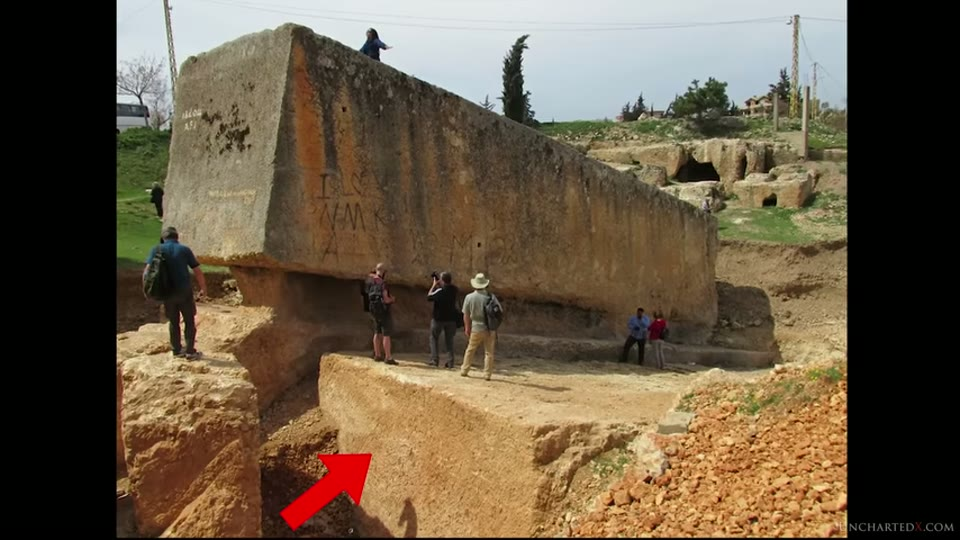
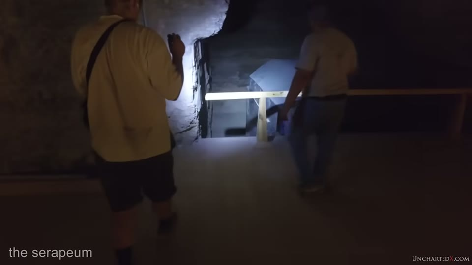

UnchartedX
Quarrying and Moving Ancient Monuments! Evidence for Ancient High Technology, Part 3!
Ben · 47 min · watch on YouTube · summarised 2026-10-01
The last of the numbered trilogy, and the one that states its own position most carefully. Part one, on machining, is the machining entry; part two, on precision, is the precision entry.
A third of this video is spent clarifying what the argument is, because Ben says he has seen it misrepresented 05:22–11:40. The clarification is worth having in full, since it is the clearest statement of his position anywhere in the corpus:
"I am not saying that I know how these marks were made, or how these objects were constructed. I do not… I am not claiming that I have the answer, and this is important, because it means the burden of proof here is not on me. It's on those who claim that they do have the answer."
And what he does claim: that copper chisels, adzes, pounding stones and flint knives "cannot produce the results that we see on specific examples" — and that the objection is not to whether the primitive methods work at all. "I have no argument that such primitive methods do in fact work. You can grind granite in this way." What he disputes is whether the results match:
"It's not an argument about whether or not you can grind copper and sand into granite. It's a matter of the specific signatures of the work, and the results of such experiments do not match the signatures that we see on some of these ancient artifacts."
He names three signatures he means: the curved circular saw marks in basalt at Abusir; the precision and symmetry of the statues and crowns at Luxor and the Ramesseum; and the continuous spiral groove on Petrie's core 7, which is held as the tube drills entry.
The four-step test
11:40–18:32. This is the structural contribution of the video and it is quoted, not invented. From Christopher Dunn's Lost Technologies of Ancient Egypt, the steps an experimentalist should have to complete:
1. have experts examine the original artefact rigorously, "paying close attention to the most difficult characteristics to reproduce" 2. describe the theorised method 3. perform the work, including that which is most difficult 4. compare the experimental results with the original artefact, taking into account all its characteristics
Dunn's charge, as read out: "In all cases, experimentalists have accomplished only steps two and three. When steps one and four have been attempted, evidence has been overlooked or ignored." And the line the video turns on: "An army of researchers could make a million slots in granite using flat and tubular pieces of copper that rub back and forth on sand, but unless the results match the evidence left behind by the ancient Egyptians, these results prove nothing about the ancient Egyptians' stone working methods."
Ben's own addition is an observation about who makes the claims: that nearly all of them come from Egyptologists, archaeologists and anthropologists, and that engineers, stonemasons and construction professionals who look at the same marks are "almost uniformly dismissive". He reports "literally hundreds of comments and emails" from such people, which is the evidence he offers for it.
And one named instance from inside the mainstream production 17:35–18:32. In the NOVA obelisk documentaries of 1999–2001 with Mark Lehner and Denys Stocks, an engineer and owner of a modern granite quarry at Aswan with more than 25 years' experience, Hamada Rashwan, was interviewed. Quoted as reported in Dunn's book:
"Yes, of course, because as you know all the ancient Egyptian obelisks were produced in this area, the unfinished obelisk area. I don't think the ancient Egyptians used people, the workers, to raise obelisks. They used very advanced engineering techniques. I think that is the true way."
The unfinished obelisk, broken into its hard parts
18:32–23:41. Ben concedes the easy half of the problem outright: there is "no point in trying to argue about whether or not primitive cultures could move around or raise 10, 20 or 50 ton blocks", which has been demonstrated with wooden levers, capstans and sleds many times. What he wants are the outliers — objects in the multiple hundreds of tons, where "material strength becomes a real issue."
The 1,200-ton unfinished obelisk at Aswan is his case, and he splits it into four tasks: lifting it roughly 20 feet out of its bed in the bedrock; moving it down a rough granite mountainside; transporting it nearly a mile to the Nile and onward; and standing it upright on a base. The site itself is held as the Unfinished Obelisk entry.

The object the logistics argument is built on, still attached to its bed.
The Thunderstone is dealt with as a comparison that does not reach. The Russian stone moved from Finland to Saint Petersburg in the 18th century is often cited; Ben gives the figures as 900 men, a two-year move, six kilometres over land, and an initial weight somewhere between 1,200 and 1,500 tons with the finished stone today around 400. He describes the method from a period engraving shown on screen — the ground frozen first, the stone undercut and shored on a platform, then moved over tracked iron rails running on large brass ball bearings, dragged by capstans. The sea passage of the same stone — a year's wait, a purpose-built barge, and two full-size warships lashed one to each side — is taken up in the Aswan harbour trench entry.
His objection is specific: "note that there was not any lifting of this stone at any point." So it does not address the lifting, the descent over rough ground, or the raising upright. And he adds the constraint that any Old Kingdom solution has to meet: no iron, no steel, no wheel, no ball bearings — only wood, rope, human power and sleds.

How a comparable mass was actually moved, in a documented case.
The pounding stones
23:41–28:26. The target here is a specific programme, and the video shows itself watching it in a browser window on Dailymotion — Ancient Impossible, Season 1 Episode 2, Moving Mountains, on a third-party re-upload with its title, uploader and view count legible.

The televised explanation the video argues against, and where it was watched.
Two clips are played. The presenter standing on the obelisk gives its figures — 137 feet long, 14 feet wide at the base, over 1,000 tons — and an interviewee explains the fire-and-pounder method and the conditions of the work: that life expectancy was around 33 years, that the quarrymen were not slaves, and that working on the obelisks was "a privileged position" and "something that you might take a pride in." Ben's response is scorn rather than analysis — he says the speaker does not sound as if he believes it — and the complaint he does make is structural: the programme "flat out dodged the hardest aspects of the unfinished obelisk problem", namely lifting it out of the trench and getting it down the mountainside.
The substantive objection comes from Dunn again, chapter 9. As Ben reports it: Dunn compared the material-removal rates claimed in experiments by Engelbach, Lehner and Hopkins and found them "highly inconsistent from one experiment to the next" — Engelbach's claim at 15 times Hopkins', and still more than 50% below the rate the ancient work would require. And the experiments pound downward with gravity helping, where quarrying a trench means horizontal work in a narrow deep space.
You can test the labour yourself, he notes: "they do let you play with the pounding stones at Aswan, if you ever go there — so please do try this activity for just a single hour and then tell me how you feel about it."

The method the accepted account proposes, as visitors are invited to try it.
The passage he closes the section on is Dunn's image for the whole dispute:
"One gets the impression that an ancient Egyptian quarry worker was like a maestro playing a complete symphony on a violin made of a cigar box and a stick, and producing the quality of a Stradivarius. The argument is pleasing and poetic, but the trouble is that, metaphorically speaking, when modern scholars make a violin from a cigar box, its results are precisely what you would expect from a cigar box and a stick."

The undercut at Aswan, as published.
The other examples
28:26–32:08. A list, with weights given: the obelisk at Karnak around 800 tons, with dozens like it going back to Old Kingdom sites; the single-piece granite columns including the standing one at Alexandria and the flared end at the temple of Bastet; the Colossi of Memnon and the Ramesseum statue in the 800-ton range; and at Tanis the fragments of what he suggests may have been the largest single-piece stone statue ever made, well over 1,000 tons and possibly 1,500 — at a site with no granite quarry anywhere near it.
Those statues are surveyed two years later in the colossal statues entry, which examines the one piece of evidence always cited for hauling them — the Djehutihotep sled painting — and reports that the statue on it is alabaster and about 58 tons. This video was announced five weeks in advance, in the postscript to the Tanis entry, as the place the material cut from that one would go.
One of the arguments in this section is historical rather than mechanical, and it is the sharpest thing in it: the Romans went to great trouble relocating Egyptian obelisks across the Mediterranean, losing or breaking almost half of them in transit, "using much more advanced techniques than the ancient Egyptians allegedly had access to." His question: why not quarry their own?
Outside Egypt he names the Peruvian sites — Sacsayhuamán, where the largest stones are put at well over 100 tons, held as the Sacsayhuamán entry, and Ollantaytambo, where the 50-to-70-ton monoliths on the mountain sit among much rougher Inca work. That contrast is the subject of the architecture-styles entry.
Baalbek
32:08–38:46. The trilithon — three stones estimated at 700 to 900 tons each, shaped, moved, lifted from ground level and fitted without mortar so closely that "you can't fit a credit card between them" — forms part of a U-shaped foundation under the Roman temple of Bacchus. Ben's position is stated as opinion and hedged: Baalbek has been destroyed, rebuilt, fortified, quarried and fought over for two millennia, "so it's always going to be something of a matter of opinion", but he does not think the Romans built the lower course.

The three stones, and where they sit in the wall.
In the quarry 800 metres away and slightly uphill: the Stone of the Pregnant Woman at around 1,300 tons, and beside it a larger block found in recent years and declared by the German Archaeological Institute to be the largest quarried stone in the world, estimated at 1,800 to 2,000 tons. He notes it was probably buried in Roman times as it was until recently.

The quarried block beside the Stone of the Pregnant Woman.
He takes the televised solution seriously enough to concede part of it. Ancient Impossible proposes that the Romans built huge wooden wheels onto the ends of a block to make an axle of it and rolled it downhill to the temple with capstans controlling the descent. Ben calls that "pure fantasy" — and then says: "Okay, fair play, it's a legitimate idea for this site, although I'm highly skeptical." His three objections are about scope rather than impossibility:
- the solution is shaped around this one stone, and the trilithon blocks and the buried one are shaped differently
- it does not address lifting the trilithon into place, or the shaping
- it depends on the quarry being close and uphill, which is specific to Baalbek and cannot be carried over to objects moved hundreds of miles over land
He also records that the newly found block appears to have a smooth flat finish, which would mean it was meant to be moved and placed without further work — and that why the quarrying stopped is unknown, a question he says is shared with the unfinished obelisk and the Serapeum.
The test he thinks could actually be run
38:46–42:07. Having granted that nobody is going to move a thousand-ton stone to settle an argument, he proposes smaller cases that could be attempted.
The Serapeum boxes. There is "less than 30 centimetres, or one foot, of clearance between the width of the largest boxes and the width of the tunnels", and the boxes were then lowered six to eight feet into the centre of sunken alcoves off the passages. He asks for someone to do that with ropes, sleds and human power, and compares it to getting a couch up a staircase with a corner in it. The site is held as the Serapeum entry.

How much room there is in the passages the boxes had to pass through.
His own position on it is stated as ignorance rather than as a claim: "I have absolutely no idea how this was done, or even attempted, with the primitive capability of the dynastic Egyptians. I just don't think it's possible."
He adds the unfinished box left in one of the main passages, around half the weight of the larger ones, which modern work left in place and built the wooden floor around — "much like the ancient Egyptians just built limestone flooring around the boxes in their alcoves."
And the Osiris Shaft at Giza: a 30-ton single-piece box in the lowest chamber, about a hundred feet down, reached only through narrow vertical shafts. The video shows a third-party cutaway diagram of the three levels with the depths labelled.

The depth and the route to the chamber holding a 30-ton box.
Where he lands
42:07–44:50. The fork, stated as two options: either we have greatly underestimated these civilisations and have not yet found their tools, or they did not make these objects and inherited them. He says which he finds more likely and why — catastrophism, the Younger Dryas, the genetic timeline, the origin stories the cultures tell about themselves — and then marks the whole thing as a position rather than a finding:
"I am certainly open to new evidence and I'm willing to have my mind changed here, but my position is the result of a couple of decades of pondering and studying this story."
What you can check yourself
- The four-step test is printed in a book and can be read, applied and argued with independently of anything else in the video.
- The pounding stones at Aswan are handed to visitors. Whether the rate of material removal is plausible is something anyone at the quarry can get a feel for in an hour.
- The unfinished obelisk's dimensions — the length, the width at the base, the depth of the trench and the distance to the Nile — are measurable and published.
- The Thunderstone's method is documented in period engravings and accounts: frozen ground, rails, bearings, capstans, and no lifting.
- The Serapeum clearance figure. The width of the boxes and the width of the passages are both measurable; the one-foot figure is a specific claim.
- The Roman record on obelisks — how many were moved, how many lost — is a historical question with sources.
- The German Archaeological Institute's declaration about the Baalbek block, and the estimate behind it, are published.
- The Osiris Shaft depths are on the diagram shown and in the excavation literature.
- The rate comparisons Dunn makes between Engelbach, Lehner and Hopkins are drawn from published experiments that can be read directly.
What the video does not settle
- The four-step test is applied to others and not to the alternative case. The video asks that experimentalists reproduce the hardest parts and compare the results; no reproduction, model or trial of any proposed advanced method appears, and none is offered.
- Every weight in the video is an estimate. 1,200 tons, 800 tons, 1,300 tons, 1,800 to 2,000 tons, 100 tons — none is weighed, and the sources for them are not given on screen.
- The engineers' consensus is reported, not sampled. "Literally hundreds of comments and emails" from engineers and stonemasons is the evidence given; no survey, count or named list accompanies it.
- Hamada Rashwan's quotation reaches the viewer third-hand — from a television programme, as reported in Dunn's book, as read out here. The programme segment is not shown.
- The experiment rates come through Dunn's account of them. Engelbach, Lehner and Hopkins are not quoted directly and their papers are not shown.
- The Baalbek attribution is explicitly opinion, and the video says the site's history makes it a matter of opinion.
- The Serapeum clearance is stated, not measured on camera. No tape, no plan and no section drawing appears.
- Nothing is dated. The inheritance conclusion rests on capability, as it does across the whole series.
- The interviewee on the quarry workers is answered with ridicule rather than with evidence. What he says about life expectancy and status is not addressed; the video says he does not sound convinced.
Names and sources heard rather than read
A 2020 upload with an unpunctuated caption track. Ten reconstructions:
| written here | as the captions give it |
|---|---|
| Aswan | "as1", "aswan" |
| Abusir | "abuser" |
| the Serapeum | "the serapium" |
| Baalbek | "balbach", "belbeck", "balbeck" |
| the trilithon | "the trilothon" |
| dolerite | "dolorite", "dollarite", "dolorete" |
| Mark Lehner | "mark laner" |
| Denys Stocks | "dennis stocks" |
| Sacsayhuamán | "saksayhuaman" |
| Ollantaytambo | "alante tambo" |
| the hedjet crowns | "head jets" |
Three things were read off the screen rather than reconstructed. The Ancient Impossible episode title, its platform and its uploader are legible in the browser window. The Dunn plate shown over the Aswan section is captioned "Figure 9.21. Undercut near the unfinished obelisk (Courtesy of Patrice Pooyard)", so both the figure number and the photograph's own credit come from the page. And the Osiris Shaft diagram carries its depths in metres and feet, and a credit line, neither of which is spoken.
One name is uncertain. Hamada Rashwan, the quarry owner, is spoken once and does not appear on screen; the spelling here is a reconstruction from the audio and is not confirmed anywhere in the video.